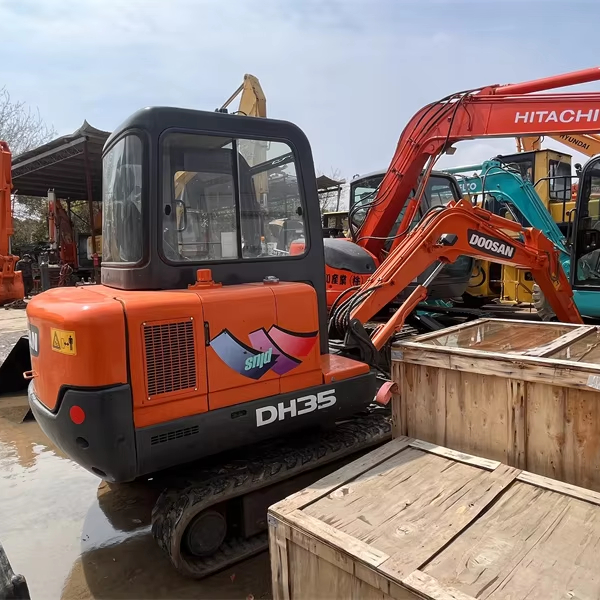

Refurbished Doosan DH35 Excavator
The Doosan DH35 Excavator is a compact, reliable machine designed for various light to medium-duty construction and excavation tasks. Known for its durability, efficient engine, and versatile hydraulic system, the Doosan DH35 is perfect for projects in confined spaces or areas where maneuverability is crucial. When refurbished, the Doosan DH35 provides exceptional value, combining the performance of a new machine with the cost-effectiveness of a used one.
Honestly, it's almost impossible to buy a brand new excavator from China. They either don't exist or are made in China. If a Chinese seller tells you their Caterpillar/Komatsu/Volvo/Kobelco/Hitachi is brand new, they're lying. Therefore, a refurbished excavator is your best bet.

Here are the detailed specifications for a refurbished Doosan DH35-7 excavator:
Operating Weight and Dimensions
- Operating Weight: 3,500–3,800 kg
- Transport Length: ~4.9–5.1 meters
- Transport Width: ~1.7–1.8 meters
- Transport Height: ~2.5 meters
- Tail Swing Radius: ~1.3–1.5 meters
- Ground Clearance: ~300 mm
- Track Width: 300–350 mm standard
Engine and Powertrain
- Engine Model: Yanmar 3TNV88 or Doosan D18 (Tier 2 compliant)
- Rated Power Output: ~21–24 kW (28–32 hp) @ 2,200 rpm
- Maximum Torque: ~100–120 Nm
- Fuel Tank Capacity: ~45–55 liters
- Travel Speed: 2.5–4.5 km/h
- Swing Speed: ~9–10 rpm
- Gradeability: Up to 30°
Hydraulic System
- Main Pump Type: Variable displacement axial piston pump
- Flow Rate: ~2 × 40–50 L/min
- System Pressure: Up to 22–24 MPa
- Hydraulic Oil Capacity: ~50–60 liters
- Control System: Pilot-operated valves
- Boom/Arm/Bucket Priority: Basic flow-sharing configuration
Performance Metrics
- Bucket Capacity: 0.09–0.11 m³ (SAE heaped)
- Max Digging Depth: ~3.0–3.2 meters
- Max Reach (Horizontal): ~5.2–5.4 meters
- Max Dump Height: ~3.5–3.7 meters
- Bucket Digging Force: ~28–32 kN
- Arm Digging Force: ~18–22 kN
Cab and Operator Features
- Cab Type: ROPS-certified canopy or enclosed cab
- Display: Analog gauges or basic LCD monitor
- Controls: Pilot joystick controls with auxiliary hydraulic circuit
- Comfort: Adjustable seat, optional heater or fan
- Visibility: Compact cab with wide glass area
Smart Features and Efficiency
- Fuel Efficiency:
- Mechanical fuel injection
- Auto idle function
- Emissions Control: Tier 2 compliant (no DPF/SCR)
- Transportability: Easily trailerable under 4-ton class
Attachments Compatibility
- Standard Bucket: 0.09–0.11 m³
- Optional Tools: Hydraulic breaker, auger, compactor, ripper
- Quick Coupler: Manual or hydraulic options available
Refurbishment Scope
Refurbished DH35 units typically include:
- Engine Overhaul: Cylinder head, injectors, seals, cooling system
- Hydraulic Restoration: Pump recalibration, valve block testing, hose replacement
- Electrical Diagnostics: Monitor, sensors, wiring harness
- Cab Reconditioning: Seat, joysticks, canopy repainting
- Structural Repairs: Boom/bucket welding, bushing replacement, undercarriage rebuild
Overview of the Doosan DH35 Excavator
The Doosan DH35 Excavator is part of Doosan's range of hydraulic excavators designed to offer reliable performance while maintaining low operational costs. It is ideally suited for a variety of tasks, including digging, trenching, grading, and landscaping. Its compact size and powerful capabilities make it a go-to option for tight spaces, urban environments, and smaller projects.
Key Specifications of the Doosan DH35
-
Operating Weight: Approximately 3,500 kg (7,716 lbs)
-
Engine Power: 26.5 kW (35.5 hp)
-
Max Digging Depth: Around 3.5 meters (11.5 feet)
-
Max Reach: About 5.8 meters (19 feet)
-
Bucket Capacity: Typically 0.15 to 0.20 cubic meters (5.3 to 7.1 cubic feet)
-
Fuel Tank Capacity: Approximately 70 liters (18.5 gallons)
-
Travel Speed: Maximum speed of 5.0 km/h (3.1 mph)
These specifications make the Doosan DH35 Excavator a lightweight and compact machine that is well-suited for a variety of tasks in residential construction, small-scale excavation, and landscaping. Its relatively low weight allows for improved maneuverability and easier transport between job sites.
Performance and Efficiency
The Doosan DH35 Excavator offers solid performance with an efficient engine and hydraulic system. Despite its smaller size, the DH35 can handle a wide range of tasks, offering a perfect balance of power and fuel efficiency.
Key Performance Features:
-
Powerful Hydraulics: The hydraulic system of the Doosan DH35 is designed for smooth and effective power delivery, making the machine ideal for digging, lifting, and material handling. The system ensures that the machine operates efficiently even in challenging conditions.
-
High Digging Force: With its solid digging force, the Doosan DH35 is capable of handling tough digging tasks with ease. Whether you're digging trenches or preparing foundations, the DH35 can accomplish the job with minimal effort.
-
Fuel Efficiency: One of the standout benefits of the Doosan DH35 is its fuel efficiency. The machine’s engine is designed to minimize fuel consumption while maintaining the necessary power for various tasks, helping reduce operational costs over time.
-
Smooth Operation: The Doosan DH35 is engineered for smooth operation, with features designed to reduce vibration and noise levels. This makes it ideal for projects that require extended hours of operation, as it reduces operator fatigue.
Durability and Construction
The Doosan DH35 is constructed with durability in mind, featuring a solid undercarriage and well-built components designed to withstand tough working conditions. Whether operating on rough terrain or handling heavy loads, the DH35 is built to endure.
Key Durability Features:
-
Reinforced Undercarriage: The undercarriage of the Doosan DH35 is built to provide stability on uneven surfaces. The tracks, rollers, and sprockets are designed to handle the rigors of tough construction environments, reducing the need for frequent maintenance or replacements.
-
Heavy-Duty Components: The boom, arm, and bucket of the Doosan DH35 are built for durability, ensuring they can withstand the stress of continuous operation in harsh conditions. These components are designed to minimize wear and tear over time.
-
Weather-Resistant Design: Whether you're working in hot, cold, or wet conditions, the Doosan DH35 is designed to function effectively in various climates. The machine's construction includes weather-resistant features that prevent premature degradation of parts.
Operator Comfort and Safety
The operator’s cabin of the Doosan DH35 is designed with comfort and safety in mind. The cabin is spacious, with easy-to-access controls and excellent visibility, helping operators work efficiently throughout their shift.
Key Comfort and Safety Features:
-
Ergonomic Cabin Design: The cabin features an adjustable seat and controls that are strategically placed for ease of use. The large windows allow operators to have a clear view of the work area, reducing the risk of accidents and enhancing productivity.
-
Improved Visibility: The Doosan DH35 is designed with the operator in mind, offering great visibility of the working environment. The large glass areas in the cabin ensure the operator can see the worksite clearly, reducing blind spots and improving safety.
-
Safety Features: The Doosan DH35 includes critical safety features, such as a Roll-Over Protective Structure (ROPS) and Falling Object Protective Structure (FOPS), to protect the operator in the event of a rollover or falling debris.
Versatility with Attachments
The Doosan DH35 Excavator is highly versatile and can be fitted with a range of attachments to enhance its functionality. Whether it's trenching, material handling, or landscaping, the DH35 can be adapted to perform multiple tasks with the right tools.
Common Attachments for the Doosan DH35:
-
Buckets: Ideal for digging, scooping, and moving materials.
-
Hydraulic Hammers: Used for breaking rocks or concrete.
-
Augers: Perfect for drilling holes for posts, foundations, or utility installation.
-
Grapples: Used for handling large or irregularly shaped materials.
The quick coupler system allows for easy attachment changes, which is essential for keeping jobsite downtime to a minimum.
Advantages of Purchasing a Refurbished Doosan DH35 Excavator
Purchasing a refurbished Doosan DH35 Excavator offers several benefits. A refurbished unit is a cost-effective option that provides the same performance as a new machine, while reducing the initial investment.
Benefits of a Refurbished Doosan DH35:
-
Lower Initial Cost: A refurbished Doosan DH35 is typically much more affordable than purchasing a new machine, allowing businesses to save money while still acquiring a high-performing excavator.
-
Restored to Optimal Performance: Reputable dealers often inspect and refurbish key components of the excavator, including the engine, hydraulics, and undercarriage, ensuring the machine is restored to near-new condition.
-
Warranty and After-Sales Support: Many refurbished machines come with warranties, providing buyers peace of mind. Additionally, dealers usually offer support services, including replacement parts and maintenance advice.
-
Environmental Benefits: By choosing a refurbished machine, you're helping to reduce the environmental impact of manufacturing new equipment. This extends the life of the Doosan DH35 and reduces waste.
Maintenance Tips for the Doosan DH35 Excavator
To maximize the lifespan and performance of the Doosan DH35, proper maintenance is essential. Regular checks and timely repairs will help keep the machine in top condition, reducing downtime and repair costs.
Recommended Maintenance Practices:
-
Hydraulic System: Inspect hydraulic hoses for signs of wear, leaks, or blockages. Replace hydraulic fluid and filters as needed to ensure smooth and efficient operation.
-
Engine Maintenance: Regularly check engine oil levels and replace the oil and filters on schedule. Ensure the cooling system is functioning properly to prevent overheating.
-
Undercarriage Checks: Inspect the tracks, rollers, and sprockets for wear or damage. Proper maintenance of the undercarriage helps avoid costly repairs and ensures a longer lifespan.
-
Cabin Maintenance: Clean the operator’s cabin regularly to ensure that the controls are easily accessible and functioning properly. Safety features like seat belts, ROPS, and FOPS should be regularly inspected.
Conclusion
The Doosan DH35 Excavator is an excellent option for businesses looking for a compact, efficient, and versatile machine. With its reliable engine, powerful hydraulics, and durable construction, it can handle a variety of tasks with ease. Whether you're digging, trenching, or material handling, the Doosan DH35 provides the performance needed for the job.
Opting for a refurbished Doosan DH35 allows businesses to get high-quality equipment at a fraction of the cost of a new machine. With proper maintenance, the Doosan DH35 can offer years of dependable service, making it a solid investment for any contractor or construction company.
Our Commitment
- 2 years / 4000 hours warranty.
- EPA certified.
- No sweatshop labor.
Contacts

- [email protected]
- Youtube Instagram Facebook
- Navigation: G206 (Sishu Bridge) in Changfeng County, Hefei City, Anhui Province, 200 meters north to the east